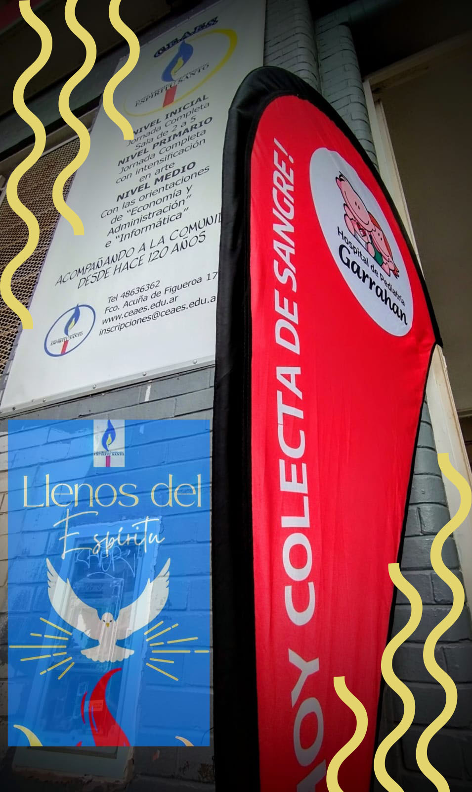
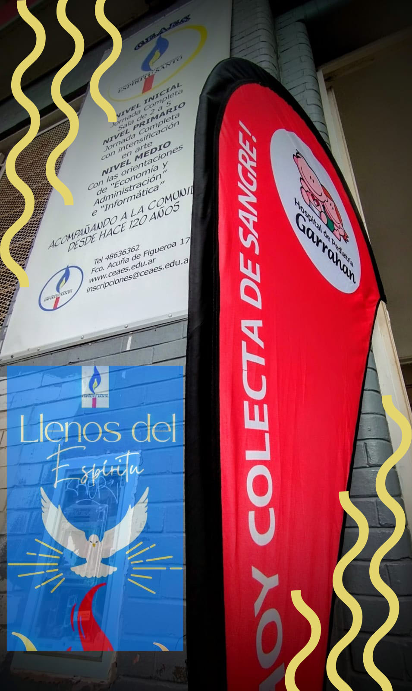

Donación de sangre
Por: Ingrid Sanchez 5°A
El 25 de abril 5to A, en conjunto con el Hospital Garrahan hicieron una campaña para la donación de sangre. Esta misma se hace para los niños que están enfermos, y necesitan transfusión de sangre muy seguida, por esto se hace esta campaña para que cualquier donante mayor de 18 años, pueda donar, mientras cumpla todos los requisitos que piden antes de la extracción de sangre y el hospital se encarga de guardar esa donación en un Banco de Sangre. Con los chicos nos organizamos en diferentes áreas: Marketing, Buffet y Administración Los de marketing se encargaron de diseñar un flyer para imprimirlo y poder pegarlo en el colegio y distintas zonas/barrios, y también lo subimos a una cuenta de Instagram. Con esto la idea era que se enteren de lo que se iba a hacer y para qué. Los de Buffet hicieron varias cosas saladas y dulces para comer. Por si algún donante venia sin desayunar, había que darle algo de comer antes de que done, porque era necesario. Como también la comida era para los que les podía llegar a bajar la presión. Los de Administración tenían que estar en la puerta para recibir a los donantes y había un registro con todos los que se habían anotado y así cuando llegaba un donante se le pedía el nombre y se lo anotaba como que estuvo presente. Esta campaña comenzó a las 09:00 y finalizo a las 16:00. Se realizo en el Espíritu Santo. Vinieron enfermeras y médicos con todos los materiales que necesitaban para hacer las extracciones. Dejamos un aula libre para que ellos puedan armar su espacio. Los donantes primero tenían que pasar por administración para anotarse, luego pasaban a un área donde les hacían preguntas para saber si el donante estaba capacitado para donar, los de buffet les preguntaban si había desayunado y les ofrecían para que consuman algo. De ahí podían esperar hasta que los médicos los llamen y pasen a donar. Al salir de la sala los hacíamos quedar unos 10 minutos para que se recuperen y les volvíamos a ofrecer algo de comer. Al finalizar esto, les dábamos un detalle que era una barrita de cereal con un agradecimiento y les pedíamos una foto con un cuadro/marco que habían hecho los de marketing.
 
